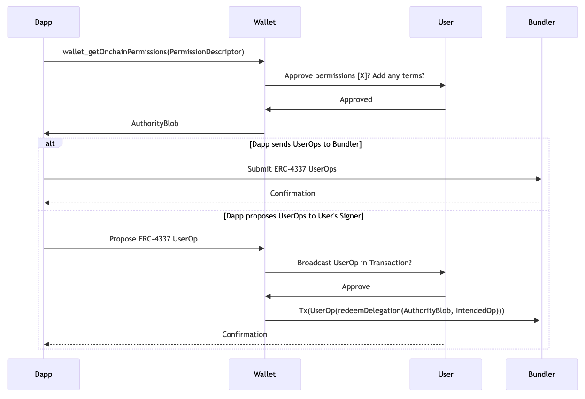

A Post-Smart-Account Dapp Permissions Flow
The ideas expressed in this blog post have been re-articulated in greater detail on this Notion page (to permit for wider collaboration).
Here's a super brief summary of a stack that is getting increasingly well defined, and I think could evolve into the new way Ethereum dapps interact with wallets post-smart-account, and could likely inform other blockchains on better secure-interaction patterns as well.
I've given a talk laying some of the foundations for this direction (but it's missing some of these steps), and started an Ethereum-magicians thread for discussing it as well, which will probably continue to be a nice place to discuss it as it evolves.
- Dapp does an RPC call:
wallet_getOnchainPermissions(PermissionDescriptor). - User uses their account to return a blob that represents this permission when
redeemDelegation(authBlob, userOp)is called on their account. - Wallet returns an
AuthorityBlobto the dapp. - Dapp uses
AuthorityBlobto initialize its preferred in-app account management tooling of choice. It could send those userOps either to a hosted bundler, or back to the user for handling the gas payment. - The Dapp can then form ERC-4337 UserOps and submit them via their own infrastructure, or propose them to be relayed by the user's signer, via something like this proposal.

You get a lot of benefits from this approach:
- Since the user forms their own permissions object, anything they sign is inherently readable (and possibly probably enforceable) by their signer, without necessarily relying on any external infrastructure.
- Since the authorization blob is used to initialize a signer object on the dapp side, the permissions granting does not require a constant connection between signer & the connected application, making it friendly to short-lived handshake protocols.
- Since the authorization blob is used to initialize an account within the dapp, the developer is free to choose the account management abstractions that they prefer or play friendliest with their existing stack (ethers, viem, wagmi, etc).
- Signers can continuously add new permissions, refining their security models without requiring updates or changes from connected applications.
- Because the dapp makes their request before knowing anything about the user, this reduces an attacker's options for cherry-picking malicious actions for an unknown user to take.
- Since this interaction pattern makes no comment on how the user forms the authorizing blob, it is completely open ended to innovation in the field of user signer design, both contract implementation and UX.
The biggest outstanding design question in this protocol is the shape of the sendTokenXonNetworkY object, which should really be called a PermissionDescriptor or something. It should be an object that can represent a desired permission, without knowing anything specific about what the user has, allowing the user to decide at their leisure whether or not to provide the requested interface. At the very least, since these are onchain permissions, the dapp probably either needs to specify a recipient address, or receive a burner account in the response.
Agent Flexibility
I've gotten a few repeated misunderstandings from people reading this. People keep asking if it locks different parties into using specific tooling. To help clarify this is not the case, I will briefly review the agents in the above diagram and demonstrate how they are not locked into a particular relationship:
The Dapp developer receives an authorityBlob from the user, and is then free to do with it as they please: They can propose transactions to the user involving the authorityBlob as usual, or the dapp can use it to enable an account that the dapp manages (either in-page or remotely). The developer is not locked into any specific smart account tooling: The wallet the permissions were requested from implemented its redeemDelegation method in its own arbitrary way. All the dapp needs to worry about is choosing how it wants to use that authority, which should give the developer full choice over their own tooling
The wallet is not locked into implementing a specific contract account, it merely has the option of exposing an interface to give its user the ability to grant permissions at their discretion in a standardized format. The wallet is not stuck using any particular tooling, it only has an optional interface.
The user is not forced to grant any permissions. The user can use any wallet they want, building whatever contract account format they want. The user can then use that account to grant whatever permissions they want to the applications they want. The user should have granted no authority by default, but should be free to grant authority to the tools and applications they want to.
The bundler is a service that either the wallet or the dapp can subscribe to. It locks neither party in, but provides a service to those who need it. It is not locked into anything, it merely has the option to expose a valuable service.
Conclusion
Anyways, I think this could be a useful pattern in the near future, but executing on it well requires some loose "choose to participate" level of consensus across implementing signers and the application developers who might choose to consume permissions in this schema. Signer developers should review this plan to see that they could still achieve their design goals while exposing this interface, and weigh the claimed benefits. Dapp developers should consider whether they would want to manage an embedded account in the way described, and if enough signers are interacting with this standard to make it worth building their application to support.